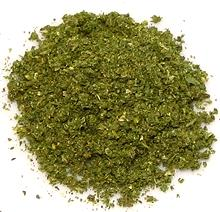

 |
Khmeli SuneliGeorgia - Khmeli Suneli | ||||
| Makes: Effort: Sched: DoAhead: |
3+ oz * 15 min Yes |
The name of this essential Georgian spice powder translates to "dried spices". It is applied to grilled meats, fish, vegetables, stews and soups. Recipes, of course, vary with household, and even with what's for dinner. | |||
|
1-1/2 1-1/2 1-1/2 1-1/2 1-1/2 1-1/2 3/4 1-1/2 1/2 5 1/4 |
T T T T T T T T T t |
Marjoram, dried Dill, dried Summer Savory, dried Mint, dried Parsley, dried Coriander seed Fenugreek Leaves (1) Marigold petals (2) Fenugreek seeds Bay Leaf, dried Chili, dried (3) |
The amounts given here will not quite fill a 4 ounce spice jar. Make - (15 min)
|